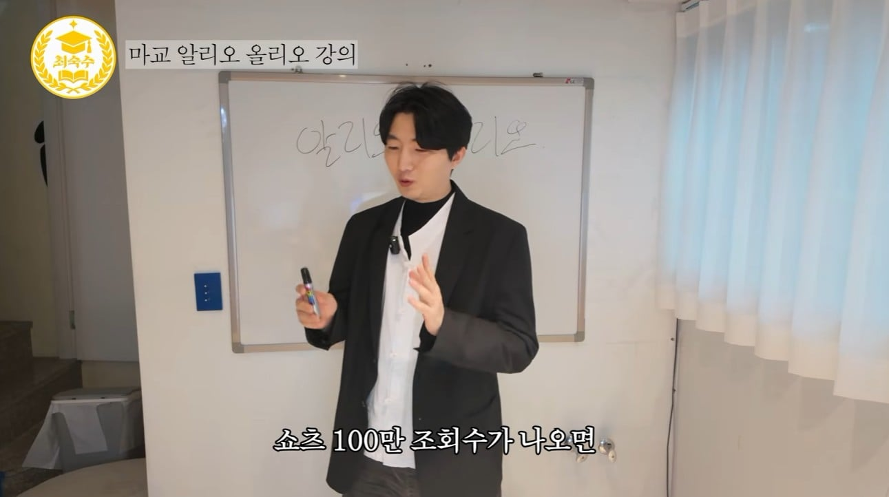
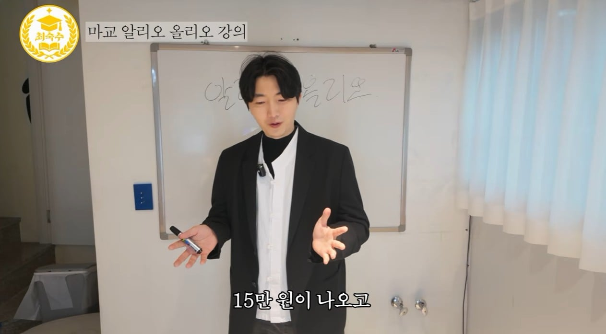
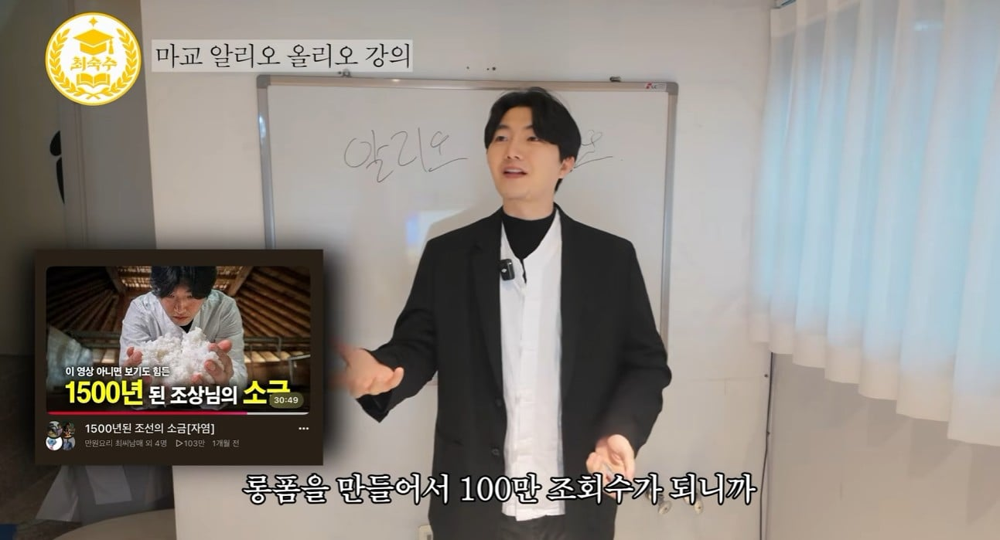
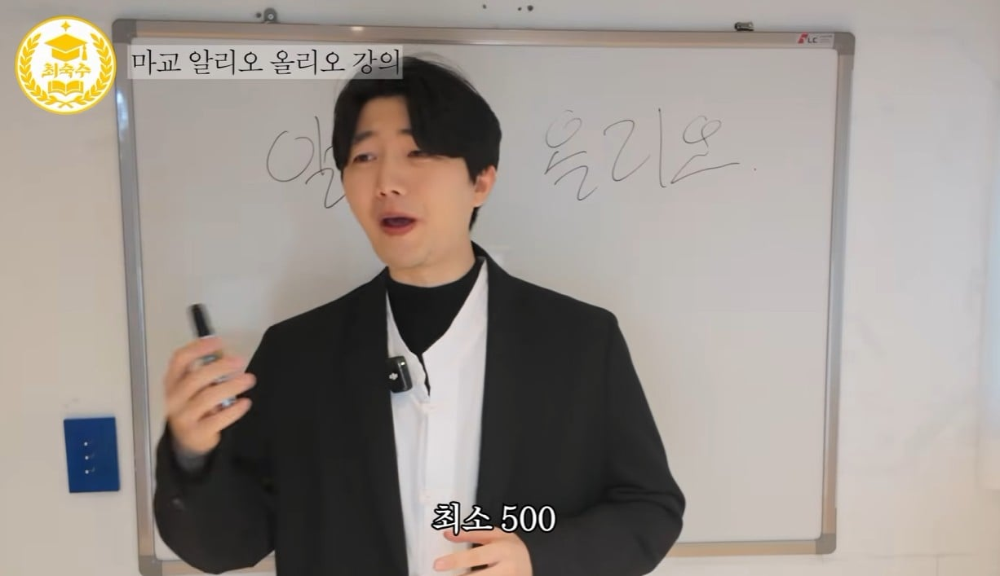

저 양반 요리하는거 보면 우리나라 궁중 음식이 파인 다이닝 저리가라던데..
준표는 영상 하나에 200만씩 4천개였으면. 어휴 대체 얼마야
소규모 채널은 수익 적어서 영상 제작 혼자 하겠네
진짜 적자면 안함 ㅋㅋㅋ
하는덴 이유가 있다
광고진행해봄 ㅋㅋㅋ 5장부터스타트 월에 4개이상 스케줄 잡혀있었음
너 유튜버고 광고해봤다고?
그리고 5천? 5억?
광고를 맡기려고 연락한거고 5천이겠지
5억이면 지상파 ppl 들어가겠다
지난번에 전통 빙식으로 소금 만드는 거 보고 진짜 기함했는데 이번에 전통 방식으로 식혜 만드는 거 보고 할 말을 잃었음.
유튜브를 유지하기위해 투잡을 뛰는건가
저사람은 자기 제품광고겸 재밌는컨텐츠 만드는거지 ㅋㅋㅋ 마케팅비가 컨텐츠일듯
세금띠는거 생각하면.. 뭐든 대박은 없음 1%만벌고 나머지는 그냥그냥임 ㅠ
저 사람 영상보면 ㄹㅇ 저런소리 나올만함ㅋㅋㅋㅋ
광고없이 순수 유튜브로는 씹적자임
유튜브 수익 본체는 광고임 광고
예전에 Primitive technology라는 유튜버 보면서 느꼈던 충격을 이 양반 보면서 한번 더 느낌 ㅋㅋㅋㅋ 광기..
올리버쌤처럼 광고 뚫기 애매한 유튜버들이 죽어나감 ㅋㅋ
먹고 입고 사용하고 쓰고 사는건 광고 잘붙지
만원요리 - 아님
최씨 - 맞음
남매 - 아님
제작비 오지네 ㄷㄷ
움직이는 블로그가 되어버렸지
곰탕은 솔직히 맛있는지 모르겠더라 ㅠ..
요리 유튜버들은 재료값 많이 들거 같다고 생각되긴 해 어그로 끌려고 막 50인분짜리 분량 요리나 고급 식재료 이런거 보여주던디
이래서 재료비없는 인터넷 렉카들이 사기인거 ㅋㅈㅋ
뭘하면 편당 500이나 나오냐 ㄷ
유튜버들 조회수 수익 왜 까는지 모르지? 나 이만큼 조회수 잘나오니까 광고 주세요 하는거임 ㅋㅋ 숏폼 멀티채널 미러링하고 광고 사용하면 못해도 몇백~천만원 스타트고 롱폼은 2500만부터 시작함 물론 영상 한편임
광고가 최소 5천만원정도 받지않을까
그럼 하지마 이쒸
광고얘기는 쏙 빼네
광고에 제품판매 마케팅에 돈되는거 다아는데 죽는소리하는건 잘되는사람들 종특인가
저사람은 자기사업 있지않나
유튜브가 적자이지만 마케팅비용이지 머
뭐하는데 제작비가 500이나 들어
돈이 안되면 안한다